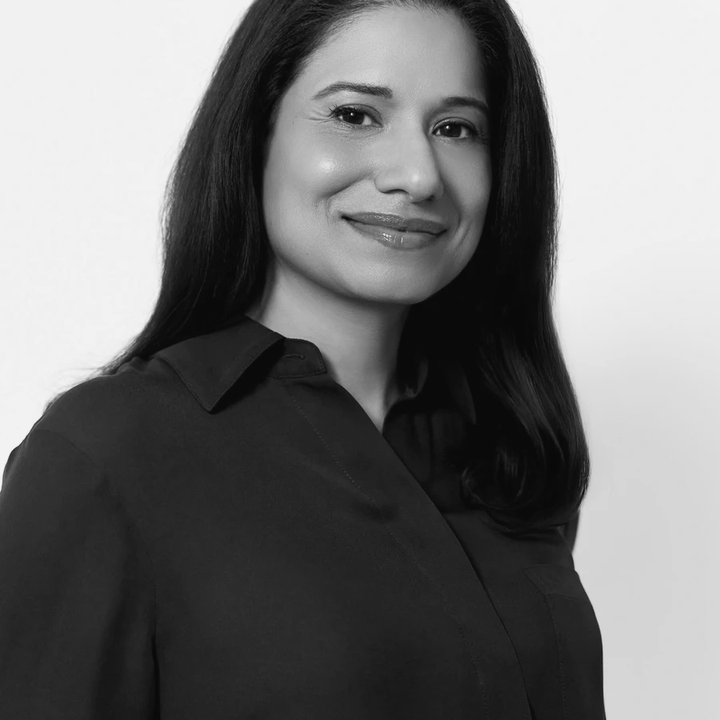

aleronMD
Founder-built
We built the care system we wanted for ourselves.

CEO · Patient #1
Jason Yim
20+ years in medtech and digital health

Founder · Nephrologist
Hamed Mizani, MD
22 years leading clinical practice

Clinical leadership
Sonal Chandra, MD
Founding Chief Medical Officer
A board-certified cardiologist with more than 20 years across preventive care, advanced imaging, and clinical technology.
NORTHWESTERN MEDICINEInternal Medicine Residency
GE HEALTHCAREMedical Director, Diagnostic Cardiology
UChicago MEDICINECardiovascular and Advanced Imaging Fellowships